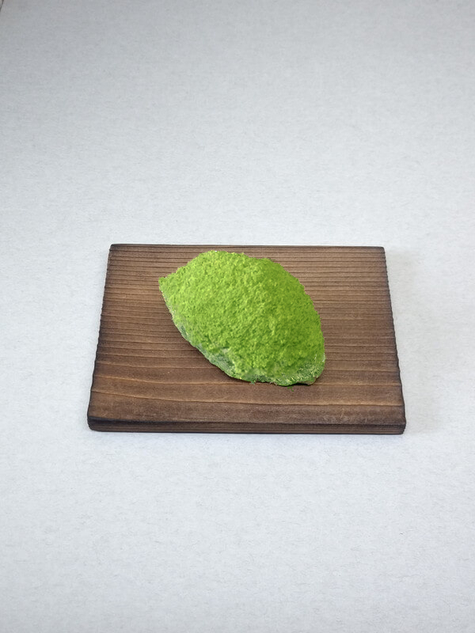
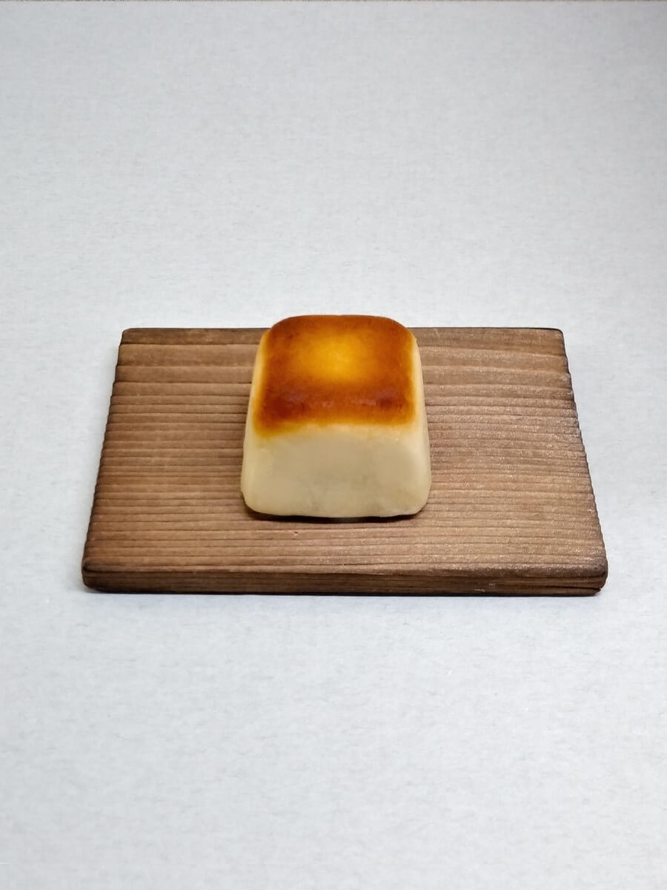
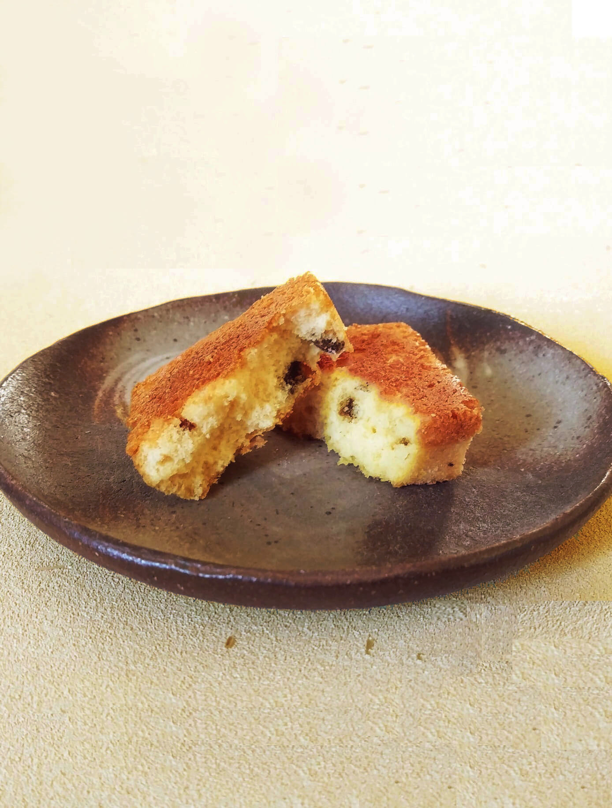
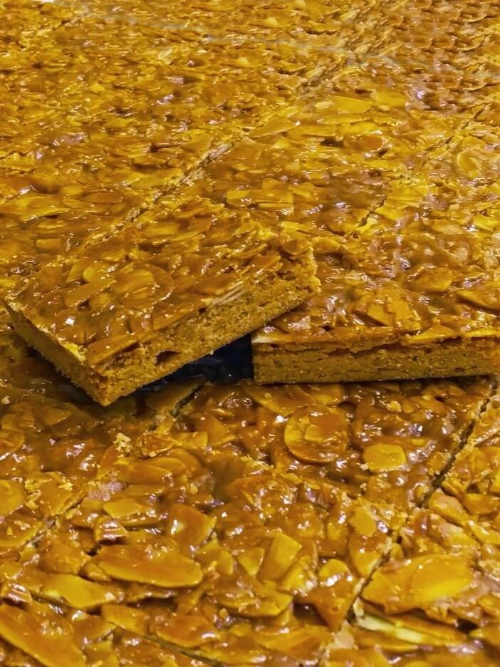

- むつの花

厳選したもち米と和三盆糖を
原料に仕上げました。長く茶道の
友として、進物としてご重用頂く
開業以来の銘菓です。
販売期間 通年
賞味期限 十五日間
特定原材料など なし
- 粉菓子

昔ながらの越後の国の伝統の、
小豆こし餡入りの落雁です。
寒梅粉と味甚粉の郷土の
糯米の風味をお愉しみください。
販売期間 通年
賞味期限 十五日間
特定原材料など なし
- 織部上用

加賀丸芋の上品なお饅頭です。
きめ細やかな生地で小豆こし餡を
包んで蒸しあげました。滋味深い
山芋の風味をお愉しみください。販売期間 冬
消費期限 三日間
特定原材料など 山芋
- うぐいす餅

冬から春の、やわらかな求肥と
小豆こし餡のお菓子です。
抹茶と新潟県産の青大豆の
きな粉をまぶしました。
販売期間 冬から春
消費期限 三日間
特定原材料など 大豆
- 桜餅

旨味のある蒸かしたての糯米の、
新潟県産のコガネモチの桜餅です。
しっとりと滑かな小豆こし餡と
桜葉の香りをお愉しみください。
販売期間 春
消費期限 二日間
特定原材料など なし
- 柏餅

柏の薫る上新粉のういろうで
小豆こしあんをとじました。
節句等に数がご入用の場合は
お早めにご連絡ください。
販売期間 夏
消費期限 二日間
特定原材料など なし
- 若鮎

生姜味の焼き皮にやわらかい
求肥餅が一本入っています。
見た目も香味も爽やかに
快い夏のお菓子です。
販売期間 夏
消費期限 三日間
特定原材料など 卵、小麦
- 松笠

黒糖生地の袱紗焼きです。
もっちりとした食感の生地を薄く
焼き、粒を残して柔らかく炊いた
大納言小豆の粒餡を包みました。販売期間 秋
消費期限 三日間
特定原材料など 卵、小麦
- 水羊羹

山の雪解け水と、自慢のこし餡の
水ようかんです。ボイル殺菌せず
日持ちはしませんが、小豆と本葛の
風味が口の中でほどけ広がります。販売期間 夏
消費期限 冷蔵にて七日間
特定原材料など なし
- 越の焼栗

その年の新栗の風味にこだわり、
堀溝の生栗を蒸し上げました。
短い期間しかお出しできませんが、
秋の味覚をお愉しみください。販売期間 秋
消費期限 三日間
特定原材料など なし
- きんつば

大納言の新小豆のきんつばです。
粒を残して甘さを殺し、
小豆の風味を感じて頂けるように
丹精を込めて煉り上げました。販売期間 冬から春
消費期限 七日間
特定原材料など 卵、小麦
- 中花

中身はこし餡です。
販売期間 注文のみ 消費期限 三日間
特定原材料など 卵、小麦
- 胡桃

信州の和ぐるみを添えた
大納言小豆粒餡の東饅頭です。
第二四回全国菓子大博覧会で
名誉総裁賞を受賞しました。
販売期間 通年
消費期限 七日間
特定原材料など 卵、小麦、胡桃
- 松の実
黄身あんをほろりと崩れる
クッキー生地で包んでいます。
ひび割れた生地に松の実を添えた
上品な焼菓子です。販売期間 通年
消費期限 七日間
特定原材料など 小麦、大豆、卵、乳
- 栗饅頭
蜜漬けの栗を微塵に刻みいれ
風味豊かな餡を炊きました。
艶のある生地が栗の香りを
閉じ込めています。販売期間 通年
消費期限 七日間
特定原材料など 卵、小麦
- 花篝

こし餡を包んだ黄身餡の桃山に、
新潟の米の風味の豊かな
長岡市横枕町、お福酒造様の地酒、
「お福正宗」を含ませました。販売期間 通年
消費期限 七日間
特定原材料など 卵
- 最中

創業以来の製法の餡を
特注の焦がし種で挟みました。
時期を問わず、常に変わらない
弊社の一番人気商品です。
販売期間 通年
消費期限 十五日間
特定原材料など なし
- かほり 蔵のかほり

シャリシャリとした歯触りの
快いお干菓子です。時期を通じて、
桜、白ぶどう、日本酒など、
種類も豊富に取り揃えております。販売期間 夏から秋
賞味期限 二ヶ月間
特定原材料など 個別に記載
- くず湯
塩漬け花を入れた桜と
宇治の抹茶の二種類です。
販売期間 通年
賞味期限 三ヶ月間
特定原材料など なし
- 干菓子
阿波和三盆糖を用いた落雁を
紅白に打ち分けました。
販売期間 通年
賞味期限 二ヶ月間
特定原材料など なし
- 胡桃玉

和三盆と信濃ぐるみの州浜です。
新潟県産のきな粉を使用しました。
販売期間 冬から春
賞味期限 一ヶ月間
特定原材料など 胡桃、大豆
- 栗玉

蜜漬の栗を濾して餡とし、和三盆を塗し表面を歯ざわりよく固めました。色も鮮やかな贅沢なお干菓子です。
販売期間 冬から春
賞味期限 一ヶ月間
特定原材料など なし
価格 五個入 三〇〇円
- 石の里

名前を昔、村松の地に因む
卵と和三盆、寒天のお干菓子です。
販売期間 通年
賞味期限 三ヶ月間
特定原材料など 卵
- 金倉山

バターカステラの中に自家製の
蜜漬けフルーツが薫ります。
美しく実り豊かな故郷の
山並みを表現しました。販売期間 通年
消費期限 十五日間
特定原材料など 卵、乳、小麦、
大豆、リンゴ、オレンジ
- フロランタン

アーモンドヌガーとバニラの
サブレのフロランタンです。
販売期間 通年
賞味期限 一ヶ月間
特定原材料など アーモンド、
オレンジ、小麦、大豆、卵、乳
- エンガディナー
蜂蜜とくるみのやわらかい
キャラメルを挟んだ焼菓子です。
販売期間 通年
賞味期限 一か月間
特定原材料など アーモンド、
くるみ、小麦、卵、乳
- ラムボール

洋酒とスパイスの香る生地と
いちじくの大人のお菓子です。
販売期間 通年
賞味期限 要冷蔵十五間
特定原材料など オレンジ、
大豆、小麦、卵、乳
- 煉羊羹
こし餡の煉羊羹です。
家伝の味をご堪能ください。
販売期間 通年
賞味期限 三ヶ月間
特定原材料など なし
- くずきりそうめん

氷の細片を入れるとなお一層
味わいが引きたちます。
豊富な雪解け水の長岡の名水と、
本葛の風味を お試しください。販売期間 夏
消費期限 冷蔵にて十日間
特定原材料など なし
- 栗きんつば

ふっくらとした栗甘露煮を
蜜漬けの大納言小豆に添えました。
冷やしていただくとより一層
美味しくお召上がり頂けます。販売期間 夏から秋
賞味期限 二ヶ月間
特定原材料など なし
- 梅のつゆ 青梅
自家製の梅酒のゼリーの中に
青梅を一つ浮かべました。
涼味ある夏限定のお菓子です。販売期間 夏
賞味期限 二ヶ月間
特定原材料など なし
- 花ぬすびと

オレンジ風味の水色のゼリーの中に
桜花塩漬けを一つ浮かべています。 涼味ある夏限定のお菓子です。販売期間 夏
賞味期限 一ヶ月間
特定原材料など オレンジ